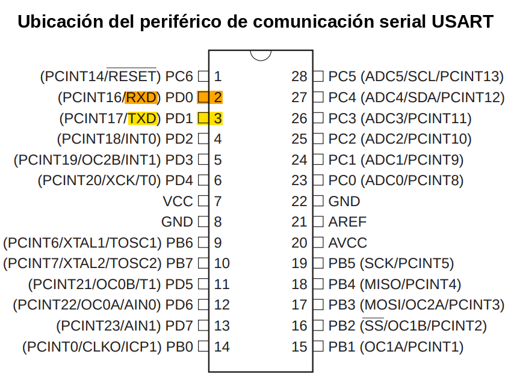
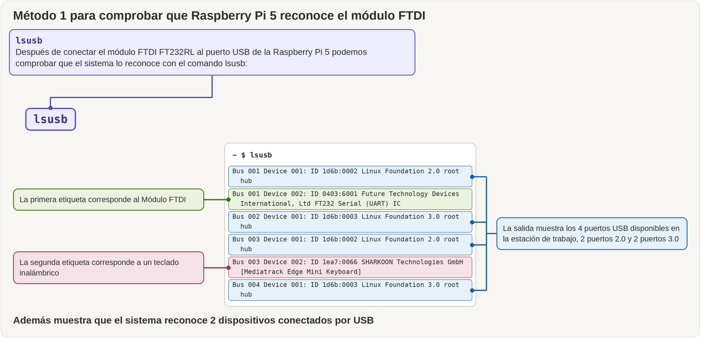
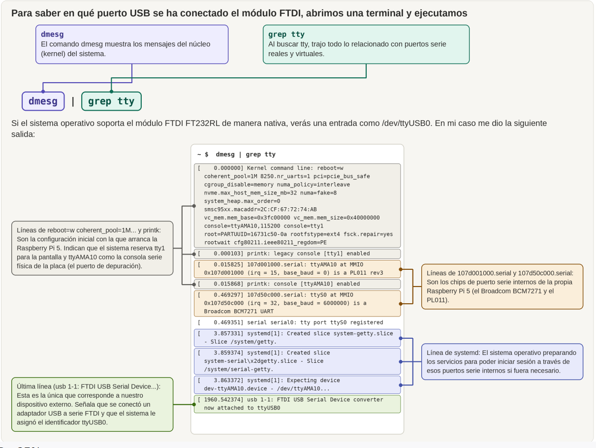
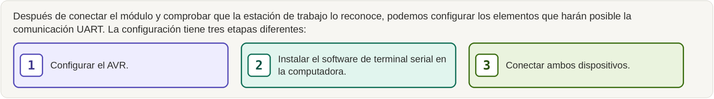
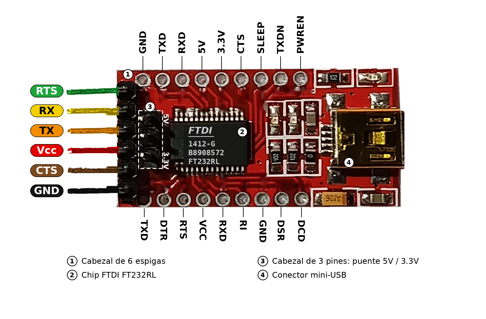
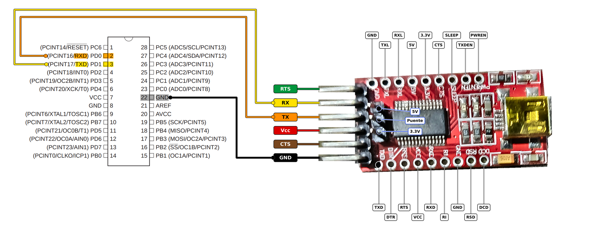
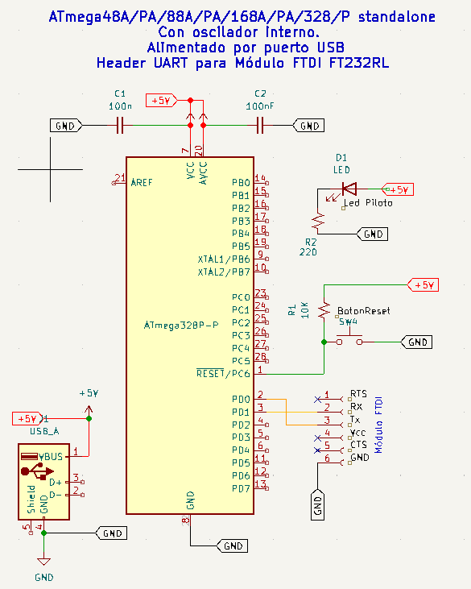

IMPLEMENTACIÓN DE LA COMUNICACIÓN SERIAL UART EN EL AVR: PROYECTO LOOPBACK
INTRODUCCIÓN
Es hora de conseguir que tus circuitos integrados se comuniquen con tu computadora de escritorio. Para ello utilizaremos el módulo FTDI FT232RL el cual conectaremos del puerto serial USART (Universal Synchronous and Asynchronous serial Receiver and Transmitter) del chip a un puerto USB del Raspbeery Pi 5
El periférico de comunicación Serial USART0
En un ATmega48A/PA/ 88A/PA/ 168A/PA/ 328/P, el periférico de comunicación serial USART0 está ubicado en el Puerto D. En este artículo lo usaremos para establecer una comunicación serial universal asincróna de recepción y transmisión (UART)
Los pines de la comunicación USART son los pines 2 y 3 como se ve en la imagen siguiente:

- PD0. Pin 2:
RXD, Receive Data (pin de entrada de datos para el USART). Cuando el receptor del USART está habilitado, este pin se configura como una entrada independientemente del valor deDDD0(registro de dirección de datos del pin PD0) - PD1. Pin 3:
TXD, Transmit Data (Pin de salida de datos para el USART). Cuando el transmisor del USART está habilitado, este pin se configura como una salida independientemente del valor deDDD1.
Lo primero que querrás hacer es asegurarte de que el enlace serial entre la computadora y el microcontrolador funciona correctamente y familiarizarte con su utilización.
1. CONEXION DEL MÓDULO FTDI A RASPBERRY PI 5
El módulo FTDI FT232RL es un módulo adaptador de un puerto serie USB a un puerto serial TTL (generalmente 3.3V o 5V seleccionables por jumper). Es un dispositivo que se usa en proyectos que requieren comunicación serial entre el puerto serial TTL de un microcontrolador y el puerto serial USB de una computadora.
A diferencia de los entornos MacOS y Windows, en la gran mayoría de distribuciones Linux modernas y en Raspberry Pi OS (incluida la Raspberry Pi 5), el driver del kernel llamado ftdi_sio viene integrado por defecto. Al conectar el módulo, el sistema lo reconoce de forma nativa y genera un puerto virtual (por ejemplo, /dev/ttyUSB0). Basta conectar y usar (plug and play).
1.1. Método 1 para comprobar que Raspberry Pi 5 reconoce el módulo FTDI
Después de conectar el módulo FTDI FT232RL al puerto USB de la Raspberry pi 5 podemos comprobar que el sistema lo reconoce con el comando lsusb:
~ $ lsusb
Bus 001 Device 001: ID 1d6b:0002 Linux Foundation 2.0 root hub
Bus 001 Device 002: ID 0403:6001 Future Technology Devices International, Ltd FT232 Serial (UART) IC
Bus 002 Device 001: ID 1d6b:0003 Linux Foundation 3.0 root hub
Bus 003 Device 001: ID 1d6b:0002 Linux Foundation 2.0 root hub
Bus 003 Device 002: ID 1ea7:0066 SHARKOON Technologies GmbH [Mediatrack Edge Mini Keyboard]
Bus 004 Device 001: ID 1d6b:0003 Linux Foundation 3.0 root hub
La salida muestra los 4 puertos USB disponibles en la estación de trabajo, 2 puertos 2.0 y 2 puertos 3.0:
- Bus 001 Device 001: ID 1d6b:0002 Linux Foundation 2.0 root hub
- Bus 002 Device 001: ID 1d6b:0003 Linux Foundation 3.0 root hub
- Bus 003 Device 001: ID 1d6b:0002 Linux Foundation 2.0 root hub
- Bus 004 Device 001: ID 1d6b:0003 Linux Foundation 3.0 root hub
Además muestra que el sistema reconoce 2 dispositivos conectados por USB
- Bus 001 Device 002: ID 0403:6001 Future Technology Devices International, Ltd FT232 Serial (UART) IC
- Bus 003 Device 002: ID 1ea7:0066 SHARKOON Technologies GmbH [Mediatrack Edge Mini Keyboard]
La segunda etiqueta corresponde a un teclado inalámbrico y la primera etiqueta corresponde al Módulo FTDI

1.2. Método 2 para comprobar que Raspberry Pi 5 reconoce el módulo FTDI
Haremos una consulta de los mensajes del núcleo filtrando por el dispositivo requerido, ftdi. En esta consulta utilizaremos dos comandos encadenados mediante el operador de pipeline o tubería | .
~ $ dmesg | grep -i ftdi
[ 1960.503105] usb 1-1: Manufacturer: FTDI
[ 1960.534781] usbcore: registered new interface driver ftdi_sio
[ 1960.534806] usbserial: USB Serial support registered for FTDI USB Serial Device
[ 1960.534867] ftdi_sio 1-1:1.0: FTDI USB Serial Device converter detected
[ 1960.542374] usb 1-1: FTDI USB Serial Device converter now attached to ttyUSB0
dmesg>: Abre el "Driver Message" (mensaje de controladores). Es un comando que muestra el historial de mensajes del núcleo (kernel) de Linux. Ahí se registra todo lo que pasa a nivel de hardware, especialmente cuando conectas o desconectas un dispositivo USB.|(pipe o tubería): Envía la salida del primer comando al siguiente. En este caso toma la salida dedmesg(que suele ser una lista enorme de miles de líneas) y se la pasa directamente como entrada al siguiente comando.grep : Es una herramienta de búsqueda que filtra texto. Solo dejará pasar las líneas que contengan la palabra que le indiques (ftdi). De esta forma, ambos comandos trabajan conjuntamente para realizar una consulta filtrada de los paquetes instalados, una técnica muy utilizada en la administración de sistemas Linux.-i: Es una opción que le dice a grep que sea "insensible a mayúsculas" (ignore case). Buscará "ftdi", "FTDI", "Ftdi", etc.
1.3 Como saber en que puerto USB se conectó el módulo FTDI FT232RL
1.3.1. Buscando y filtrando por tty
Para saber en que puerto USB se ha conectado el módulo FTDI, abrimos una terminal y ejecutamos
~ $ dmesg | grep tty
Si el sistema operativo soporta el módulo módulo FTDI FT232RL de manera nativa, verás una entrada como /dev/ttyUSB0.
En mi caso me dio la siguiente salida:
~ $ dmesg | grep tty
[ 0.000000] Kernel command line: reboot=w coherent_pool=1M 8250.nr_uarts=1
pci=pcie_bus_safe cgroup_disable=memory numa_policy=interleave nvme.max_host_mem_size_mb=32
numa=fake=8 system_heap.max_order=0 smsc95xx.macaddr=2C:CF:67:72:74:AB vc_mem.mem_base=0x3fc00000
vc_mem.mem_size=0x40000000 console=ttyAMA10,115200 console=tty1 root=PARTUUID=16731c50-0a
rootfstype=ext4 fsck.repair=yes rootwait cfg80211.ieee80211_regdom=PE
[ 0.000103] printk: legacy console [tty1] enabled
[ 0.015825] 107d001000.serial: ttyAMA10 at MMIO 0x107d001000 (irq = 15, base_baud = 0)
is a PL011 rev3
[ 0.015868] printk: console [ttyAMA10] enabled
[ 0.469297] 107d50c000.serial: ttyS0 at MMIO 0x107d50c000 (irq = 32, base_baud = 6000000)
is a Broadcom BCM7271 UART
[ 0.469351] serial serial0: tty port ttyS0 registered
[ 3.857331] systemd[1]: Created slice system-getty.slice - Slice /system/getty.
[ 3.859374] systemd[1]: Created slice system-serial\x2dgetty.slice - Slice /system/serial-getty.
[ 3.863372] systemd[1]: Expecting device dev-ttyAMA10.device - /dev/ttyAMA10...
[ 1960.542374] usb 1-1: FTDI USB Serial Device converter now attached to ttyUSB0
El comando dmesg muestra los mensajes del núcleo (kernel) del sistema. Al buscar tty, trajo todo lo relacionado con puertos serie reales y virtuales:
- Líneas de reboot=w coherent_pool=1M... y printk: Son la configuración inicial con la que arranca la Raspberry Pi 5. Indican que el sistema reserva tty1 para la pantalla y ttyAMA10 como la consola serie física de la placa (el puerto de depuración).
- Líneas de 107d001000.serial y 107d50c000.serial: Son los chips de puerto serie internos de la propia Raspberry Pi 5 (el Broadcom BCM7271 y el PL011).
- Línea de systemd: El sistema operativo preparando los servicios para poder iniciar sesión a través de esos puertos serie internos si fuera necesario.
- Última línea (usb 1-1: FTDI USB Serial Device...): Esta es la única que corresponde a nuestro dispositivo externo. Señala que se conectó un adaptador USB a serie FTDI y que el sistema le asignó el identificador ttyUSB0.

1.3.2. Listando los archivos /dev/tty
También se puede averiguar en qué puerto serial USB está conectado el módulo FTDI, escribiendo:
~ $ ls /dev/tty*
En mi caso, el dispositivo FTDI se desconectaba y reconectaba constantemente (un problema conocido como USB disconnect loop). El sistema operativo detecta el convertidor serial correctamente y lo asigna a ttyUSB0, pero a los pocos segundos (entre 2 y 5 segundos después) se desconecta solo de forma abrupta. y durante varias veces. Lo solucioné actualizando la eeprom de Rasbperri OS
~ $ sudo apt update && sudo apt upgrade -y
Después de conectar el módulo y sabemos que la estación de trabajo la reconoce, podemos configurar los elementos que harán posible la comunicación UART. La configuración tiene tres etapas diferentes:
- Programación del AVR.
- Instalar el software de terminal serial en la computadora.
- Conectar ambos dispositivos: módulo FTDI FT232RL y el microcontrolador.

2. CONFIGURACIÓN: PROGRAMACIÓN DEL AVR
Como los microprocesadores AVR disponen de circuitería USART dedicada en su interior, todo lo que tenemos que hacer para comunicarnos es configurar la interfaz y después colocar nuestros bytes en los registros especiales de hardware destinados a la transmisión y recepción.
El periférico de hardware se encargará del resto. Esto resulta extremadamente práctico.
Primero, para comprobar que todo funciona, cargaremos un pequeño programa de demostración.
Si todavía tienes conectados los LED de los capítulos anteriores, perfecto. De lo contrario, no podrás observar la representación numérica ASCII del valor de cada carácter mientras lo escribes.
Antes de entrar en los detalles de la configuración del hardware USART, veamos cómo utilizarlo mediante el Ejemplo serialLoopback.c
1.1. Ejemplo 5-1. Código serialLoopback.c
/*
A simple test of serial-port functionality.
Takes in a character at a time and sends it right back out,
displaying the ASCII value on the LEDs.
*/
// ------- Preamble -------- //
#include <avr/io.h>
#include <util/delay.h>
#include "pinDefines.h"
#include "USART.h"
int main(void) {
char serialCharacter;
// -------- Inits --------- //
LED_DDR = 0xff; /* set up LEDs for output */
initUSART();
printString("Hello World!\r\n"); /* to test */
// ------ Event loop ------ //
while (1) {
serialCharacter = receiveByte();
transmitByte(serialCharacter);
LED_PORT = serialCharacter;
/* display ascii/numeric value of character */
} /* End event loop */
return (0);
}Ve directamente al bucle de eventos (event loop) y podrás ver que nuestro programa realiza solamente tres cosas.
Primero recibe un byte desde la línea serial mediante la función receiveByte().
Después transmite nuevamente ese mismo byte mediante transmitByte().
Finalmente, el LED muestra el byte que acaba de enviar, representado en ASCII.
En la sección de inicialización no debería sorprenderte encontrar que configuramos los LED como salidas, exactamente como hicimos en el capítulo anterior.
Lo nuevo son las funciones initUSART() y printString().
Estas funciones deben estar definidas en algún lugar, pero ¿dónde?
Si subes hasta el preámbulo del programa, verás que he incluido un archivo nuevo:
USART.hSi abres ese archivo encontrarás los prototipos de las funciones. Entraremos en detalle sobre la rutina de configuración en «Configuración de USART: los detalles importantes» y sobre la inclusión de módulos en «Módulos en C» en otros artículos.
Por ahora, nos concentraremos en comprobar que todo funciona correctamente.
1.2. Las funciones como verbos
Es una cuestión de estilo, pero considero que si nombro todas mis funciones utilizando verbos que describen lo que hacen y todas las variables utilizando sustantivos descriptivos, el código C puede comenzar a leerse como una oración.
Es cierto que quizá tengas que escribir un poco más la primera vez, pero imagínate que vuelves a revisar este código dentro de seis meses.
¿Podrás recorrerlo y encontrar la sección que quieres modificar?
Podrás hacerlo si tus funciones y variables tienen nombres descriptivos.
Ese es el panorama general. Si todavía no lo has hecho, este es un buen momento para cargar el código del proyecto serial Loopback en tu AVR.
3. CONFIGURACIÓN: LA COMPUTADORA
En la computadora solo necesitas instalar el software emulador de terminal adecuado.
En particular, necesitas conectarte a una aplicación de terminal que te permita escribir hacia el AVR y leer lo que este devuelve.
Si tienes una aplicación de terminal favorita, puedes utilizarla. De lo contrario, aquí tienes algunas sugerencias.
3.1. Linux
gtkterm es fácil de configurar y debería funcionar en la mayoría de las distribuciones Linux.
Otra opción es screen, disponible tanto en Mac OS como en Linux, aunque quizá no sepas que puede utilizarse como terminal serial.
3.1.1 GTKterm
GTKterm es un emulador gráfico de terminal de puerto serie para sistemas operativos Linux y POSIX, creado por Julien Schmitt y licenciado bajo la GPL-3.0. Se puede usar para comunicarse con todo tipo de dispositivos con interfaz serie, como ordenadores integrados, microcontroladores, módems, receptores GPS, máquinas CNC y más.
En Raspberry Pi OS, puedes comprobar si GTKTerm está instalado mediante los siguientes comandos ejecutados en la terminal.
3.1.1.1. Comprobar si el paquete está instalado
Ejecuta el siguiente comando para consultar el estado del paquete GTKTerm en la base de datos de paquetes de Debian:
dpkg -l gtktermInterpreta el resultado de la siguiente manera:
-
iial principio de la línea indica que el paquete está instalado y configurado correctamente. -
un
iindica que el paquete no está instalado. - Si el paquete no aparece en la salida, comprueba su estado mediante los siguientes comandos.
3.1.1.2. Consultar la versión instalada
Para consultar la versión instalada y la información disponible en los repositorios, ejecuta:
apt policy gtkterm
Si aparece Installed: (none), GTKTerm no está instalado.
Si aparece un número de versión en ese campo, esa es la versión
instalada en el sistema.
3.1.1.3. Comprobar si el ejecutable está disponible
También puedes comprobar si el sistema encuentra el ejecutable de GTKTerm:
command -v gtkterm
Si el comando devuelve una ruta, como
/usr/bin/gtkterm, el ejecutable está disponible
en una ubicación incluida en la variable de entorno
PATH.
3.1.1.4. Instalar GTKterm
Si GTKTerm no está instalado, puedes intentar instalarlo desde los repositorios configurados en Raspberry Pi OS:
~ $ sudo apt install gtkterm
Installing:
gtkterm
Summary:
Upgrading: 0, Installing: 1, Removing: 0, Not Upgrading: 0
Download size: 127 kB
Space needed: 337 kB / 67,7 GB available
Des:1 http://deb.debian.org/debian trixie/main arm64 gtkterm arm64 1.3.1-1+b1 [127 kB]
Descargados 127 kB en 0s (452 kB/s)
Seleccionando el paquete gtkterm previamente no seleccionado.
(Leyendo la base de datos ... 316175 ficheros o directorios instalados actualmente.)
Preparando para desempaquetar .../gtkterm_1.3.1-1+b1_arm64.deb ...
Desempaquetando gtkterm (1.3.1-1+b1) ...
Configurando gtkterm (1.3.1-1+b1) ...
Procesando disparadores para desktop-file-utils (0.28-1) ...
Procesando disparadores para hicolor-icon-theme (0.18-2) ...
Procesando disparadores para man-db (2.13.1-1) ...
Procesando disparadores para mailcap (3.74) ...
Comprobamos la versión instalada utilizando el paquete dpkg
~ $ dpkg -s gtkterm
Package: gtkterm
Status: install ok installed
Priority: optional
Section: comm
Installed-Size: 329
Maintainer: Willem van den Akker wvdakker@wilsoft.nl
Architecture: arm64
Source: gtkterm (1.3.1-1)
Version: 1.3.1-1+b1
Depends: libc6 (>= 2.34), libgdk-pixbuf-2.0-0 (>= 2.25.2), libglib2.0-0t64 (>= 2.56.0),
libgtk-3-0t64 (>= 3.9.10), libgudev-1.0-0 (>= 146), libpango-1.0-0 (>= 1.14.0),
libvte-2.91-0 (>= 0.45.90)
Description: simple GTK+ serial port terminal
gtkterm is a simple GTK+ terminal used to communicate with the serial port.
.
Its features :
.
* Serial port terminal window
* Serial port setup (speed, parity, bits, stopbits, flow control)
* Using the termios API
* Possible to send a file (only RAW data, no protocol)
* End of line delay while sending a file
* Special character wait before next line while sending a file
* Possible to toggle control lines manually (DTR, CTS)
* Also reads the state of control lines (RTS, CD, DSR, RI)
.
Author: Julien Schmitt
Homepage: https://github.com/wvdakker/gtkterm
Tambien podemos comprobar la versión instalada más brevemente:
~ $ apt policy gtkterm
gtkterm:
Instalados: 1.3.1-1+b1
Candidato: 1.3.1-1+b1
Tabla de versión:
*** 1.3.1-1+b1 500
500 http://deb.debian.org/debian trixie/main arm64 Packages
100 /var/lib/dpkg/status
3.1.1.5. Configuración para la comunicación UART
Una vez instalado y abierto GTKTerm, podrás configurarlo para comunicarte con el ATmega328P mediante una interfaz UART. Para ello, deberás seleccionar el puerto serie correspondiente al adaptador USB-UART y establecer los parámetros de comunicación que utiliza el firmware del microcontrolador.
Los parámetros principales son:
- Puerto serie, por ejemplo,
/dev/ttyUSB0o/dev/ttyACM0. - Velocidad de transmisión, expresada en baudios (baud rate).
- Número de bits de datos.
- Paridad.
- Número de bits de parada.
3.1.2. Screen
Comprobaremos si tenemos instalado screen
~ $ apt policy screen
screen:
Instalados: (ninguno)
Candidato: 4.9.1-3
Tabla de versión:
4.9.1-3 500
500 http://deb.debian.org/debian trixie/main arm64 Packages
El resultado indica que screen no está instalado en la Raspberry Pi 5, pero está disponible en los repositorios de Debian Trixie para la arquitectura arm64 de la Raspberry.
- Instalados: (ninguno) significa que no tienes instalado el paquete.
- Candidato: 4.9.1-3 es la versión que apt propone instalar.
- Repositorio: trixie/main arm64 indica de dónde se obtendría el paquete.
3.1.2.1. Instalación de screen
Si quieres utilizar screen como terminal serie para comunicarte con tu ATmega328P, ejecuta:
~ $ sudo apt install screen
3.1.2.2. Usar screen para la comunicación UART
Una vez instalado, puedes abrir una conexión serie. Por ejemplo, si tu adaptador USB-UART aparece como /dev/ttyUSB0 y el firmware del ATmega328P utiliza 9600 baudios:
~ $ screen /dev/ttyUSB0 9600
Esto debería permitirte comunicarte directamente con el AVR.
Ctrl-A seguido de Ctrl-? muestra la ayuda.
Ctrl-A y después Ctrl-K finaliza la sesión actual.
Si el dispositivo aparece como /dev/ttyACM0, utiliza ese nombre en su lugar.
Para cerrar screen, pulsa Ctrl+A y, a continuación, K; después confirma con Y.
3.2. Mac OS
CoolTerm y ZTerm son buenas aplicaciones de terminal serial para Mac.
Si no detectan automáticamente el puerto serial, puedes encontrarlo abriendo una terminal normal y escribiendo:
ls /dev/*usbserial*Debes buscar algo parecido a:
/dev/cu.usbserial-XXXX3.3. Windows
Existen muchísimos programas de terminal para sistemas Windows.
Antiguamente, Hyperterminal era la opción predeterminada y se encontraba dentro de Accesorios.
En tiempos más recientes he utilizado Bray's Terminal, que es minimalista y cumple su función.
Si no estás seguro de qué puerto está conectado al USB serial, compruébalo en el Administrador de dispositivos (Device Manager), dentro de:
Puertos → USB Serial Port
3.4. Multiplataforma: Python
Si ya tienes Python y la biblioteca serial instalados, puedes ejecutar el emulador de terminal serial incluido.
Escribe:
python -m serial.tools.miniterm --cr [portName] 9600y deberías poder comunicarte con el AVR.
Ten en cuenta que debes utilizar Ctrl-] para salir y Ctrl-T seguido de Ctrl-H para obtener ayuda.
3.5. Multiplataforma: Arduino
Si tienes instalado Arduino IDE en tu computadora, encontrarás su programa de terminal serial en:
Tools → Serial Monitor
Este programa "terminal" funciona suficientemente bien para recibir datos del AVR, pero requiere que pulses Enter después de cada carácter que escribas para enviarlo.
Para texto, puedes enviar una línea completa de esta manera, pero para cualquier aplicación interactiva resulta incómodo.
En resumen, no recomiendo el Serial Monitor de Arduino como programa de terminal de propósito general, aunque funciona correctamente si solamente necesitas recibir datos del AVR.
Comprueba nuevamente que hayas conectado el pin RX del cable de la computadora/FTDI al pin TX del AVR, y viceversa.
En la protoboard, con un cable FTDI representado por la tira de seis pines de colores, la conexión será como se muestra en la Figura 5-4.
4. CONFIGURACIÓN: CONEXIÓN DEL ADAPTADOR USB-SERIAL AL AVR
Ya tienes el código serialLoopback cargado en el AVR y el nuevo software de terminal serial instalado y ejecutándose en la computadora.
Es momento de conectar el microcontrolador AVR standalone y el módulo FTDI FT232RL
El periférico USART0 de la serie de microcontroladores ATmega48A/PA/ 88A/PA/ 168A/PA/ 328/P maneja niveles de tensión lógicos digitales estándar compatibles con TTL/CMOS, lo que significa que un 1 lógico es igual a su voltaje de alimentación ($V_{CC}$) y un 0 lógico es igual a 0V ($GND$). Sin embargo, hay un matiz técnico importante: en los manuales oficiales del fabricante, el puerto nunca se define explícitamente usando la sigla "TTL", sino simplemente como un periférico USART. Se asume que es TTL/CMOS porque todas las entradas y salidas de propósito general (GPIO) del chip operan bajo las especificaciones eléctricas de corriente continua (DC) nativas del microcontrolador, las cuales se adaptan a los estándares lógicos TTL o CMOS según el voltaje al que alimentes el integrado.
| Estándar Lógico | Voltaje Alimentación (VCC/VDD) | Entrada Baja (VIL máx) | Entrada Alta (VIH mín) | Salida Baja (VOL máx) | Salida Alta (VOH mín) |
|---|---|---|---|---|---|
| TTL (Estándar) | 5.0 V | ≤ 0.8 V | ≥ 2.0 V | ≤ 0.4 V | ≥ 2.7 V |
| CMOS (5V) | 5.0 V | ≤ 1.5 V | ≥ 3.5 V | ≤ 0.1 V | ≥ 4.9 V |
| AVR (ATmega a 5V) | 5.0 V | ≤ 1.5 V (0.3×VCC) | ≥ 3.0 V (0.6×VCC) | ≤ 0.9 V | ≥ 4.2 V |
| LVCMOS / LVTTL | 3.3 V | ≤ 0.8 V | ≥ 2.0 V | ≤ 0.4 V | ≥ 2.4 V |
| AVR (a 3.3V) | 3.3 V | ≤ 1.0 V (0.3×VCC) | ≥ 2.0 V (0.6×VCC) | ≤ 0.6 V | ≥ 2.3 V |
4.1. Pinout del cable FTDI
Si tienes uno de los habituales cables FTDI, su distribución de pines (pinout) se resume en la tabla siguiente.
| Color | Señal |
|---|---|
| Negro | GND |
| Marrón | CTS# |
| Rojo | VCC |
| Naranja | TXD |
| Amarillo | RXD |
| Verde | RTS# |
4.2. Pinout del módulo de comunicación serial FTDI FT232RL
Si no tienes un cable FTDI, las líneas que debes buscar en el módulo tendrán etiquetas como RX, TX, GND y, opcionalmente, VCC.

Es posible alimentar el proyecto y el AVR mediante el pin Vcc del módulo FTDI FT232RL, sin embargo se puede sobrecragar el puerto USB del Raspberry Pi 5.
La forma correcxta es alimentar el proyecto mediante una fuente externa de 5 V, en este caso el microcontrolador AVR, el módulo FTDI FT232RL y la fuente externa deben compartir la misma conexión a GND.
4.3 Conexión del módulo FTDI FT232RL y el microcontrolador AVR
Conectar el adaptador serial al dispositivo AVR de la serie ATmega48A/PA/ 88A/PA/ 168A/PA/ 328/P es tan sencillo como conectar tres conductores, y el primero es muy simple:
GND.
Los otros dos son un poco más «complicados».
Debes conectar el RX de un dispositivo al TX del otro, y el TX de uno al RX del otro.
«Cruzar» los conductores de esta manera tiene sentido desde el punto de vista electrónico, pero observa que la convención de nombres es completamente diferente de la que utilizamos para los pines SPI del programador.
En aquel caso:
MOSI del programador → MOSI del AVR
SCK del programador → SCK del AVR
etc.
Casi todos los protocolos seriales modernos se especifican de esta manera: los pines que tienen el mismo nombre se conectan entre sí.
La convención más moderna también facilita especialmente el etiquetado del cable que conecta ambos dispositivos.
El conductor que conecta MOSI con MOSI debe etiquetarse como «MOSI».
Pero ¿cómo etiquetas el conductor que conecta RX con TX? ¿O el que conecta TX con RX?
Normalmente, la respuesta sería algo como:
TXA - RXB
RXA - TXBpero, además de ser nombres largos, tienes que recordar qué dispositivo es «A» y cuál es «B».
Es un verdadero desorden.
Los ingenieros aprendieron la lección después de la mala convención de nombres utilizada en los antiguos puertos seriales, pero eso no nos ayuda aquí, en el mundo USART.
Por lo tanto, simplemente recuerda:
Cuando utilices comunicación serial USART tradicional, conecta RX de un dispositivo con TX del otro y TX con RX.
Esquemáticamente, la configuración debería ser como se muestra en la imagen siguiente.

Esquemático de conexión de E/S serial UART de AVR con Módulo FTDI FT232RL.

5. ASCII
Al enviar bytes de 8 bits a través de una línea serial, es natural pensar en ellos como números.
Pero si quieres enviar letras, necesitamos establecer una correspondencia entre números y letras.
Aquí entra en escena el Código Estándar Estadounidense para el Intercambio de Información (ASCII, American Standard Code for Information Interchange).
Puedes consultar una tabla ASCII en Internet o escribir:
man asciien Linux u OS X.
De lo contrario, bastará con saber que:
'A' = 0x41
'B' = 0x42
'a' = 0x61
'0' = 0x30Lo que se encuentra entre estos valores debería resultar bastante evidente.
C y ASCII funcionan muy bien juntos.
Puedes pasar de letras a números y viceversa de forma natural y, debido a que los caracteres están definidos siguiendo un orden alfabético y numérico correspondiente, existen todo tipo de trucos que puedes realizar con ASCII.
Por ejemplo:
'A' + 2 = 'C'
'0' + 3 = '3'Esto significa que si tienes la variable:
a = 3;y quieres enviar dígitos individuales representados como caracteres ASCII, puedes enviar:
'0' + aLa función printByte() de mi biblioteca USART aprovecha este hecho para enviar un byte como su representación textual:
void printByte(uint8_t number){
/* Hundreds */
transmitByte('0'+ (number/100));
/* Tens */
transmitByte('0'+ ((number/10) % 10));
/* Ones */
transmitByte('0'+ (number % 10));
}Con todo esto en mente, carga el programa de demostración serialLoopback.c, escribe algunas letras en el teclado y observa cómo parpadean los LED mostrando su valor numérico binario en ASCII.
¡Estás observando el fantasma dentro de la máquina!
Nuevamente, observa que hemos conectado los conductores RX y TX, y que hemos conectado la tierra del cable FTDI a la tierra común del circuito AVR y del programador.
Y si todavía tienes conectados los LED del capítulo anterior, mucho mejor.
6. INTEGRACIÓN COMPLETA: PRUEBA DEL LOOPBACK
Si ya has cargado el código serialLoopback en el microcontrolador, conectado los pines RX/TX —y GND— al convertidor USB-Serial y conectado este a la computadora, ha llegado el momento de probar el sistema.
Abre el programa de terminal y asegúrate de que esté configurado con el puerto correcto —el correspondiente al convertidor USB— y con la velocidad correcta:
9600 baudiosSi el programa tiene una opción denominada «local echo», configúrala como desactivada.
Nosotros vamos a recibir de vuelta desde el AVR los caracteres que enviemos.
Si el eco local está activado, verás dos veces todo lo que escribas, como esto:
lliikkee tthhiissAhora escribe algo.
Los LED deberían mostrar los valores binarios correspondientes a la letra que escribiste, de acuerdo con su representación ASCII.
¡Éxito!
Y si desconectas y vuelves a conectar la alimentación del AVR —o conectas momentáneamente a tierra el pin RESET— deberías recibir el amistoso mensaje:
Hello World!Si has llegado hasta este punto, todo está funcionando correctamente.